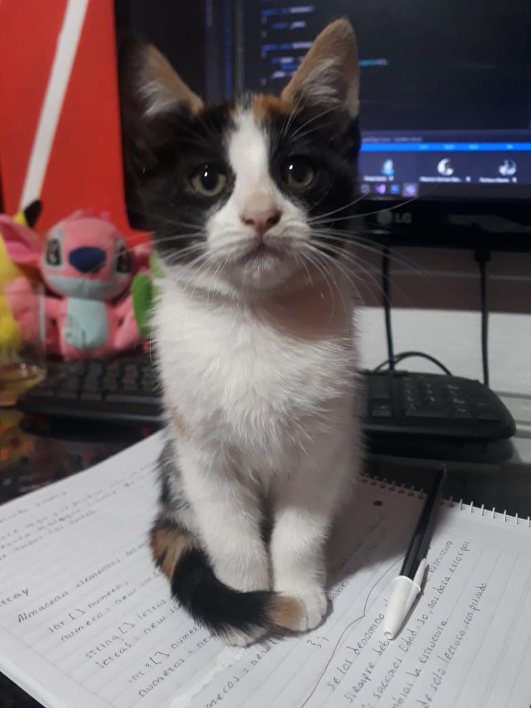
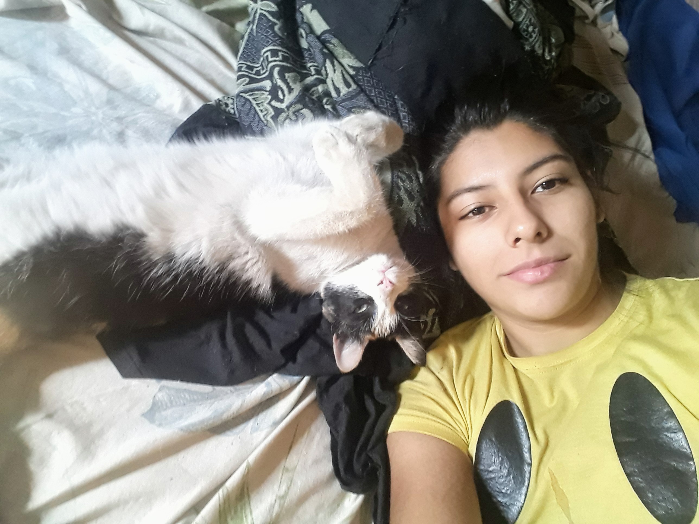
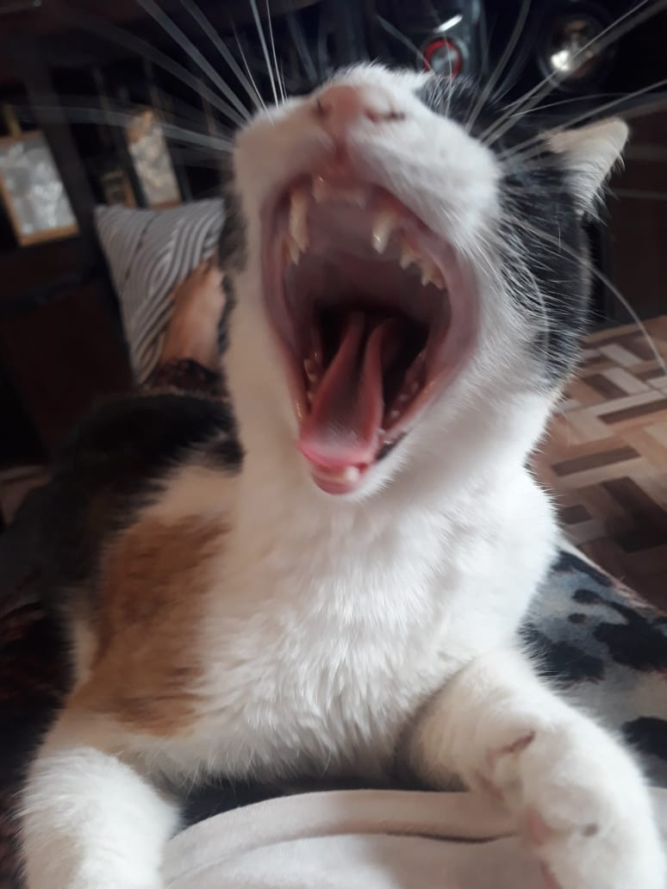

La vida de Marmolado
Mármolado, un encantador gato tricolor, nació el 3 de marzo de 2021 en la pintoresca provincia de Tucumán, Argentina. Desde temprana edad, este felino demostró una personalidad única y un deseo peculiar: convertirse en presidente de la República Argentina.
Criado en el hogar de Johana, su dedicada dueña, Mármolado descubrió su amor por las bolsas y cajas desde sus primeros días. Johana, una amante de los animales, le proporcionó un entorno acogedor en el que Mármolado podía explorar su curiosidad felina.
Una de las características más distintivas de Mármolado fue su fascinación por las bolsas y las cajas. Pasaba horas jugando dentro de ellas, deleitándose con la textura y el sonido que producían. Este peculiar interés se convirtió en una de las razones por las cuales Mármolado se ganó el corazón de Johana y de quienes lo conocían.
Con el tiempo, Mármolado y Johana emprendieron un emocionante viaje a Buenos Aires. La ciudad, conocida por su vibrante vida urbana, ofreció a Mármolado un nuevo territorio para explorar. No pasó mucho tiempo antes de que este felino tricolor se convirtiera en una figura popular en la vecindad, capturando la atención de vecinos y amigos.
Una de las características más notables de Mármolado era su deseo constante de recorrer todo el terreno. Ya sea en el departamento de Johana o en las calles de Buenos Aires, Mármolado exploraba con curiosidad y valentía. Este rasgo, combinado con su carácter carismático, le granjeó una creciente base de admiradores.
A medida que Mármolado crecía, desarrolló una aspiración inusual: convertirse en presidente de Argentina. Su carácter carismático y su habilidad para ganarse el afecto de las personas alimentaron esta fantasía, convirtiéndola en una anécdota encantadora en la vida de este gato tricolor.
Aunque Mármolado no pudo cumplir su sueño de convertirse en presidente, dejó un legado duradero en los corazones de quienes lo conocieron. Su historia única y su amor por las bolsas y las cajas lo convirtieron en un personaje querido en Tucumán y Buenos Aires. La relación especial entre Mármolado y Johana sigue siendo un recordatorio de la conexión única entre humanos y animales.